European
Spanish
- Civilization bonus: Experience points are earned faster. Home City shipments also arrive faster.
- Unique units: Lancer, Rodelero, Missionary, War Dog
- Royal Guard units: Garrochista Lancer, Espada Rodelero, Tercio Pikeman
- Home City: Seville
-
Personal comment:
The Spanish were pioneers of the Age of Discovery; therefore, in matches, they can quickly receive shipping support from their home cities and swiftly establish an advantage in the New World.
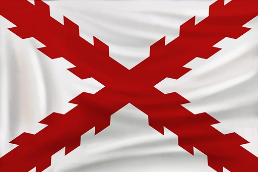
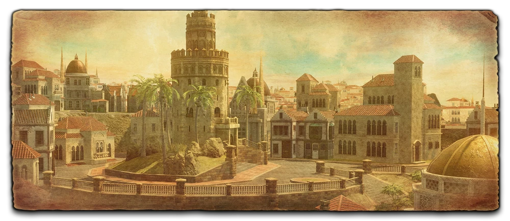
British
- Civilization bonus: Build Manor Houses, which replace normal Houses and spawn Settlers.
- Unique units: Longbowman, Ranger, Rocket
- Royal Guard units: Redcoat Musketeer, King's Life Guard Hussar
- Home City: London
-
Personal comment:
The British are a civilization excelling in economic growth; with every Manor House built, a Settler is added. The Redcoat Musketeers and Hussars, serving as the main forces, are historically renowned troop types. Additionally, the British have a very strong navy and livestock industry.
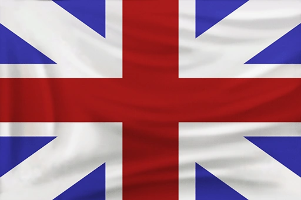
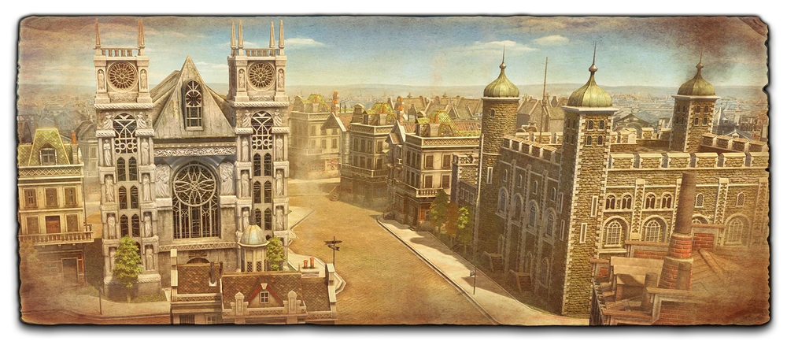
Dutch
- Civilization bonus: Begins with an Envoy. Train Merchants instead of Settlers, which cost coin instead of food and gather coin 15% faster. Can build unique buildings called Banks which generate coins.
- Unique units: Envoy, Ruyter, Fluyt, Merchant
- Royal Guard units: Stadswacht Halberdier, Carabineer Ruyter
- Home City: Amsterdam
-
Personal comment:
The Dutch are the origin of modern capitalism and the birthplace of banks. The Dutch cannot have a large number of settlers like other civilizations, but they can generate a continuous coin trickle through banks, enabling them to afford expensive artillery and mercenaries.
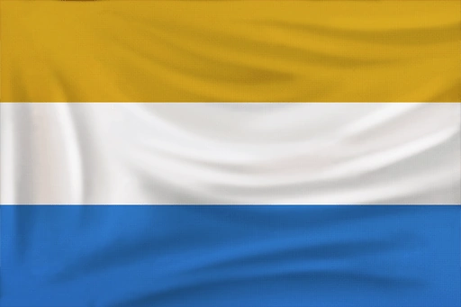
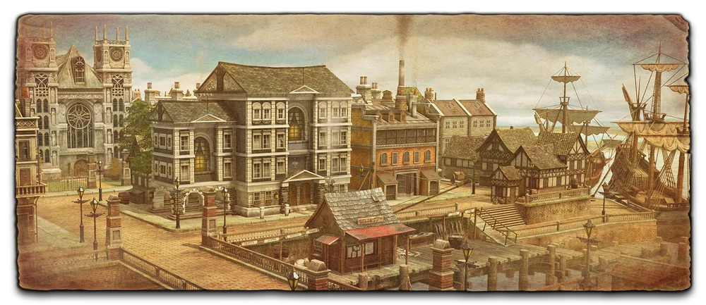
French
- Civilization bonus: Begins with a Native Scout. Train Coureur des Bois instead of Settlers, which gather and fight better.
- Unique units: Coureur des Bois, Cuirassier
- Royal Guard units: Gendarme Cuirassier, Voltigeur Skirmisher
- Home City: Paris
-
Personal comment:
In AOE3, the French civilization isn’t particularly distinctive, with its most prominent feature being the efficient Coureur des Bois and the powerful Cuirassier cavalry that can crush opponents in the final battle. It is a straightforward and strong civilization.
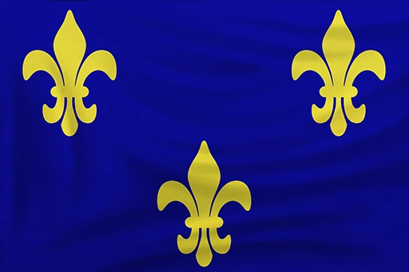
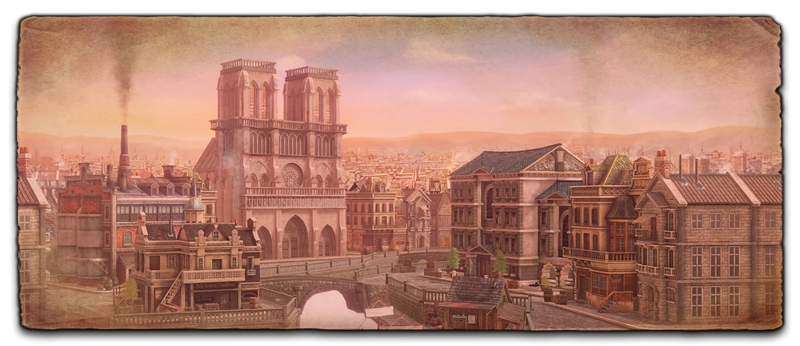
Germans
- Civilization bonus: Receive free Uhlans with every Home City shipment. Have an extra type of Settler — Settler Wagons — which gathers and fights better. Mercenaries are available earlier and they have more shipments of them.
- Unique units: Uhlan, Settler Wagon, Doppelsoldner, War Wagon, Landwehr
- Royal Guard units: Needle Gunner Skirmisher, Czapka Uhlan
- Home City: Berlin
-
Personal comment:
The Germans have unique Donkey Cart Settlers and War Wagons. As a historical hub for mercenary deployment, they are especially proficient in mercenary tactics.
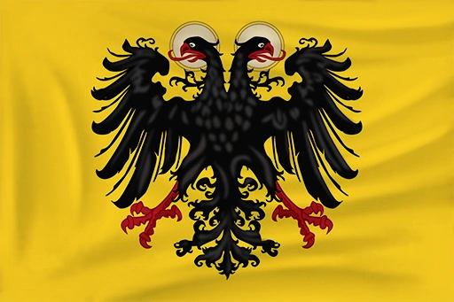
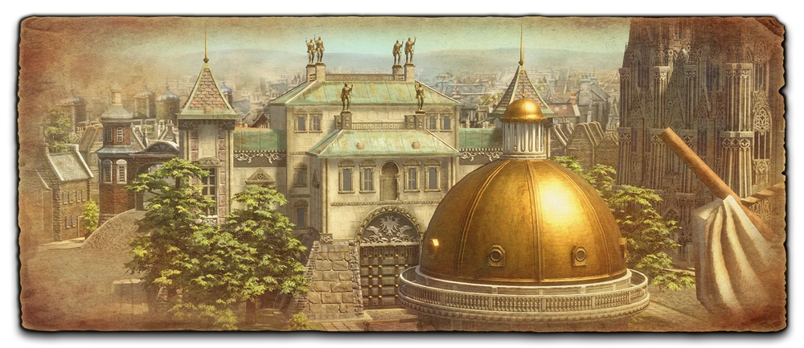
Ottomans
- Civilization bonus: Town Centers spawn Yörük, Villagers which cost no food. Artillery have extra Line of Sight. Have access to the most unique units compared to European civilizations.
- Unique units: Imam, Abus Gunner, Janissary, Sipahi, Galley, Great Bombard, Nizam Fusilier, Azap, Humbaraci, Deli, Yörük, Bashibozuk, Muhbir
- Royal Guard units: Ulufeli Humbaraci, Rumeliot Deli
- Home City: Istanbul
-
Personal comment:
The Ottomans can be considered the most powerful civilization suitable for beginners. As one of the civilizations that historically equipped their troops with gunpowder on a large scale earliest, the Ottomans are proficient in using firearms, small cannons, and the Great Bombard, exuding a strong aura of gunpowder.
 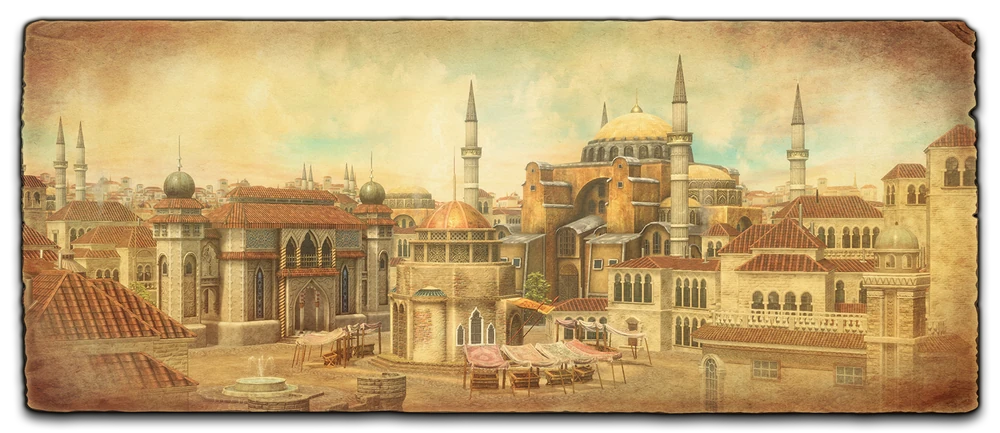
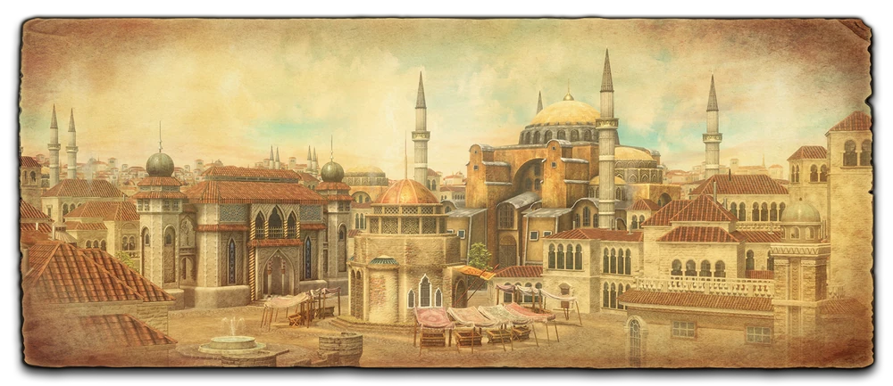
Portuguese
- Civilization bonus: Receives a free Covered Wagon for every Age advanced and starts with 7 settlers.
- Unique units: Cassador, Organ Gun
- Royal Guard units: Ordinance Besteiro Crossbowman, Legionario Musketeer, Legion Dragoon
- Home City: Lisbon
-
Personal comment:
The Portuguese are, relatively speaking, the most challenging civilization to use. They start at a disadvantage in the early stages, but as the ages progress, they can construct town centers everywhere, eventually occupying the entire map step by step.

Russians
- Civilization bonus: Villagers and infantry are trained in groups. Have Blockhouses instead of Outposts and Barracks, which combines the functions of both. Have a population limit of 210.
- Unique units: Strelet, Poruchik, Rekrut, Cossack, Oprichnik
- Royal Guard units: Pavlov Grenadier, Dvoryane Cavalry Archer
- Home City: St. Petersburg
-
Personal comment:
The Russians have a unique mechanism for training soldiers in batches, which can reduce costs and speed up the training process. At the same time, they can easily place blockhouses and fortresses on the map, constructing large-scale defensive fortifications.
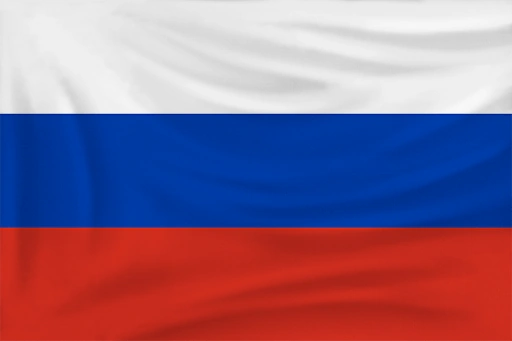
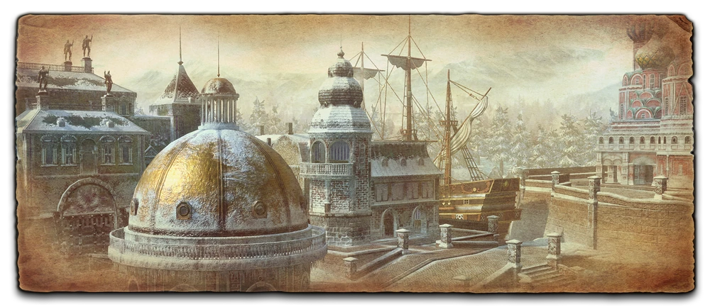
Americans
Aztecs
- War Chief bonus: Doubles experience gained in combat by nearby units.
- Civilization bonus: Begins with a Warrior Priest, that can heal units and count as two villagers at the Community Plaza.
- Home City: Tenochtitlan
-
Personal comment:
The Aztecs established an empire in Central America, possessing advanced agricultural techniques and valiant martial spirit. Although they lack cavalry, their Jaguar Warriors, armed with Maquahuitls, can directly defeat any opponents in the Fortress Age.
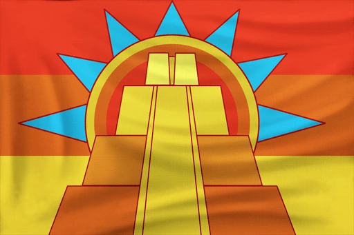
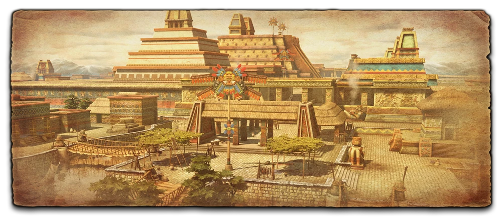
Haudenosaunee
- War Chief bonus: Boosts hit points of nearby units.
- Civilization bonus: Begins with a Travois, that can construct buildings for free. Trees last 75% longer.
- War Council: Caughnawaga
-
Personal comment:
As forest residents, the Haudenosaunee build most buildings for free. However, they are more like the Europeans than the other Native American civilizations, being the only native civilization with access to an artillery unit.
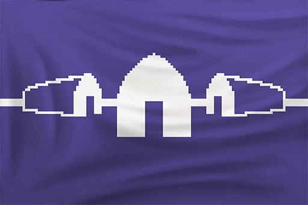

Lakota
- War Chief bonus: Boosts speed of nearby units.
- Civilization bonus: Begins with 200 population and huntable animals last 10% longer, but cannot build walls until the Industrial Age.
- War Council: Great Council
-
Personal comment:
After European colonists brought their horses to America, the natives soon learned breeding and riding horses. The Lakota are even stronger at cavalry than Europeans! They can swiftly rush and defeat their opponent.
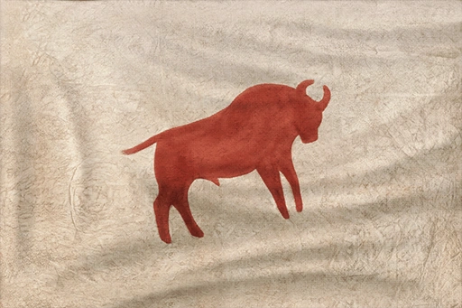
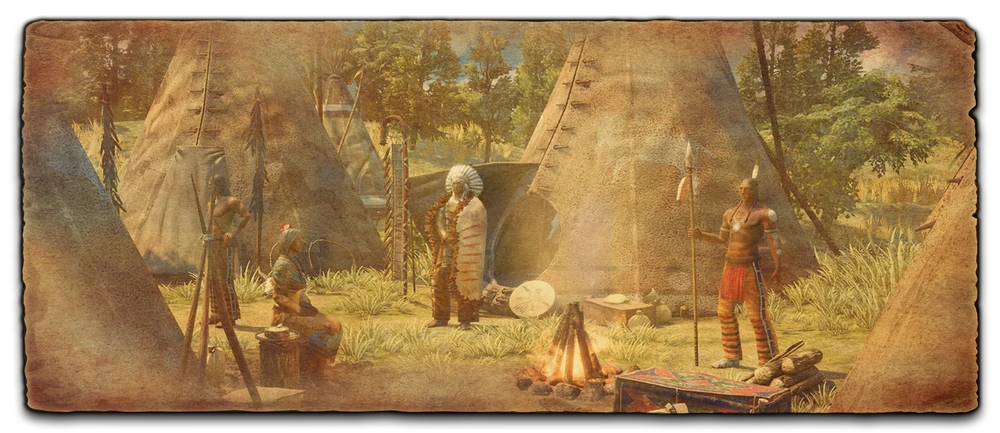
Asians
Chinese
- Civilization bonus: Have Villages instead of Houses which supports twice the population than the latter. Trains infantry and cavalry in groups called banner armies.
- Home City: Beijing
-
Personal comment:
The Chinese civilization boasts diverse units due to its Dynasty system, offering versatile strategies. With powerful gunpowder units and the unique Monk, China can field large armies quickly.
 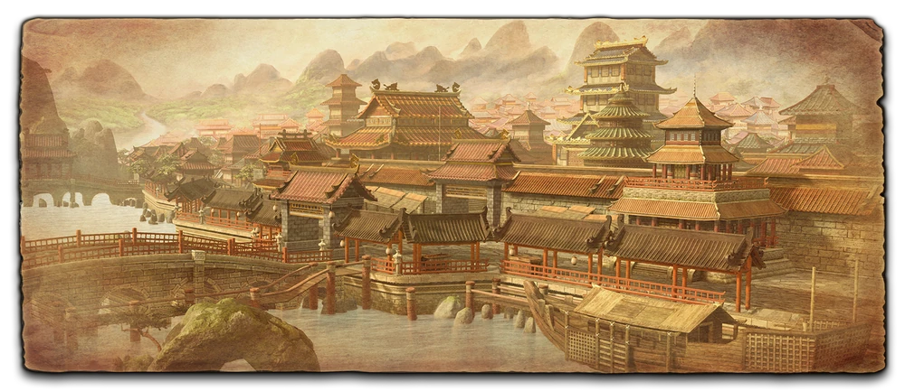
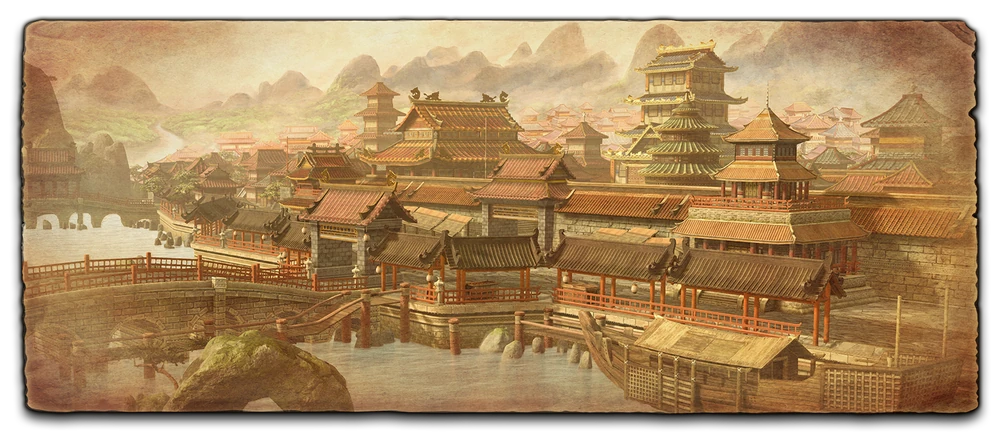
Indians
- Civilization bonus: Villagers cost wood instead of food and cannot kill livestock for food, but can build unique buildings called Sacred Field which livestock can be stationed to generate XP.
- Home City: Delhi
-
Personal comment:
Indian civilization leverages strong economic bonuses and unique technologies. Their Elephant units are powerful and versatile, making them formidable opponents on the battlefield.
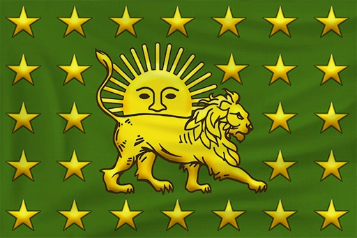

Japanese
- Civilization bonus: Have Shrines, which replace normal Houses and generate resources. Villagers cannot hunt animals for food, but can build Shrines next to wild animals to increase the resource trickle rate.
- Home City: Edo
-
Personal comment:
Japanese units, including Samurai and Ashigaru, are effective and disciplined. With the ability to build powerful Dojos and shrines that aid economy and military production, Japanese is a robust civilization.
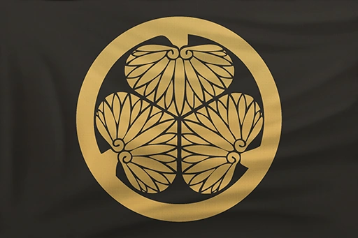
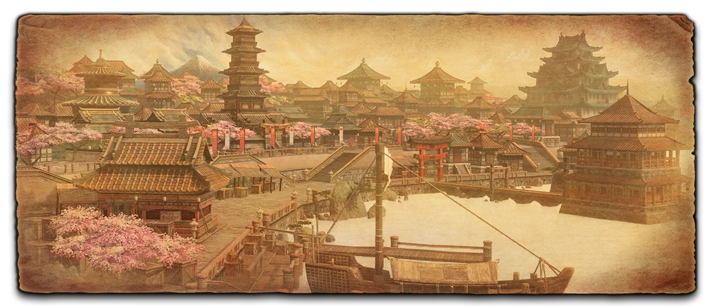
Independent Countries
United States
- Civilization bonus: Can levy Minutemen at regular intervals. Unlocks two Factory cards in the Industrial Age.
- Culture bonus: Starts with a General who can plant an Inspiring Flag and build Forts. Advances in Age by choosing a Federal State that unlocks two powerful unique cards.
- Unique units: Minuteman, State Militia, Regular, Sharpshooter, Carbine Cavalry, Gatling Gun, Quaker Gun, Gunslinger, Cowboy, Owlhoot
- Home City: Washington D.C.
-
Personal comment:
Representing a blend of various cultures, the U.S. leverages diverse unit types and technologies. With a dynamic economy and strong late-game military, they are formidable in the Industrial Age.
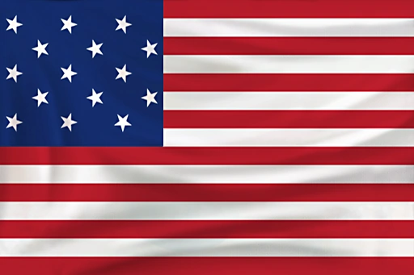
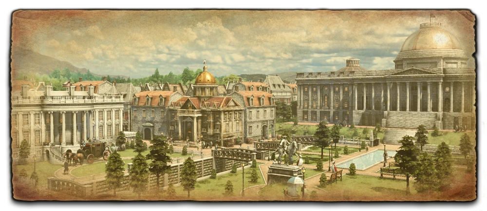
Mexicans
- Civilization bonus: Settlers may be tasked to Haciendas to produce resources or spawn units. Can revolt in earlier ages and return to Mexico afterward.
- Culture bonus: Starts with a General who can plant an Inspiring Flag and build Forts. Advances in Age by choosing a Federal State that unlocks two powerful unique cards.
- Unique units: Padre, Salteador, Insurgente, Soldado, Chinaco, Cuatrero, Bandido, Desperado
- Home City: Mexico City
-
Personal comment:
Though not a classic civilization, if considered, Mexico would likely feature a mix of Indigenous and European elements, showcasing diverse military units and a hybrid architectural style.
 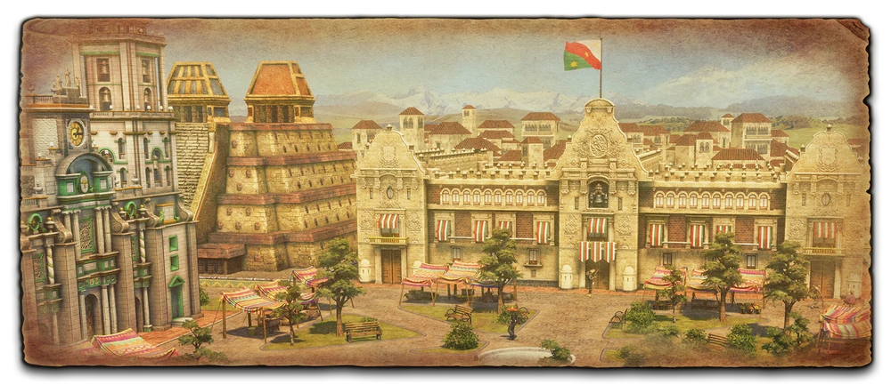
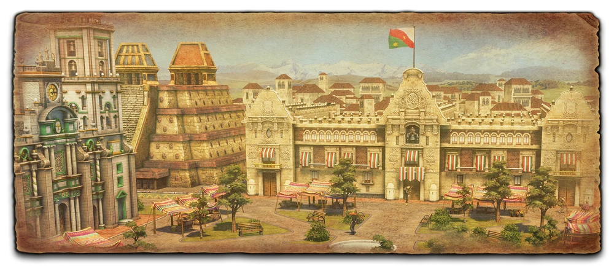
Africans
Ethiopians
- Civilization bonus: Receives a free Mountain Monastery builder with each age up.
- Unique units: Ras, Abun, Gascenya, Shotel Warrior, Neftenya, Oromo Warrior, Sebastopol Mortar, War Dhow
- Home City: Gondar
-
Personal comment:
Representing African power, Ethiopia has unique technologies and units, with a strong focus on religion and trade. They can ally with European or African powers to enhance their strengths.
 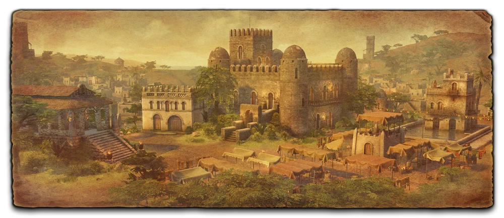
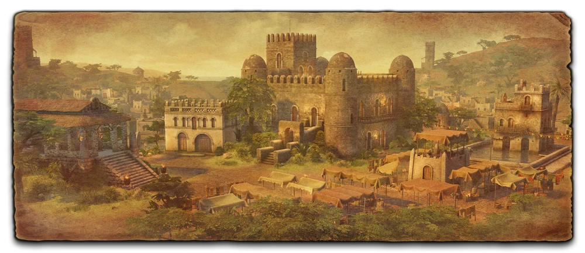
Hausa
- Civilization bonus: Receives a free Sanga cattle with every shipment. Can build Universities.
- Unique units: Emir, Griot, Maigadi, Raider, Fulani Archer, Lifidi Knight, Xebec
- Home City: Kano
-
Personal comment:
The Hausa civilization has a unique resource management system, relying on influence as a secondary resource. With strong trade and military units, they effectively engage in both economy and warfare.
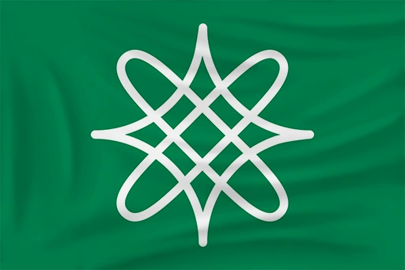
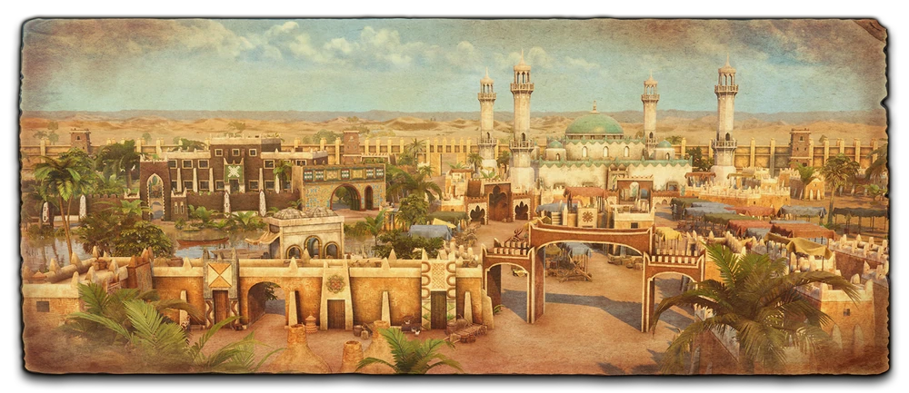